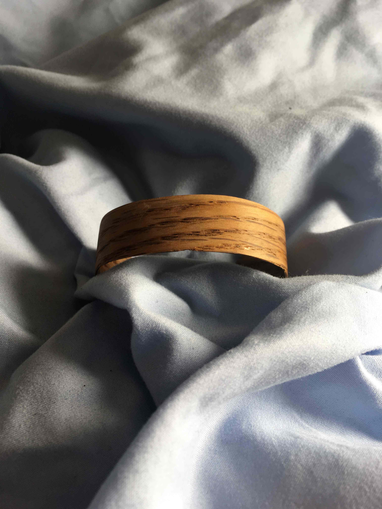
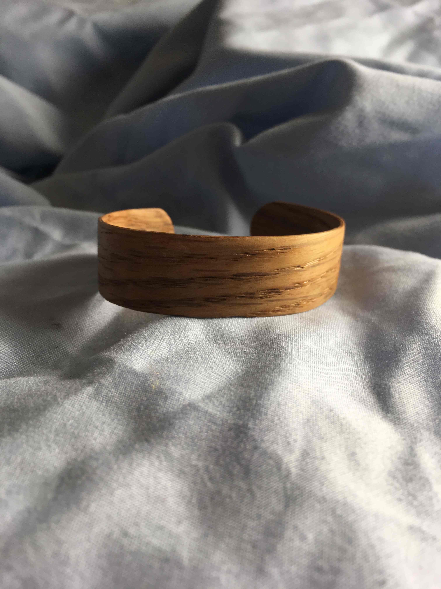
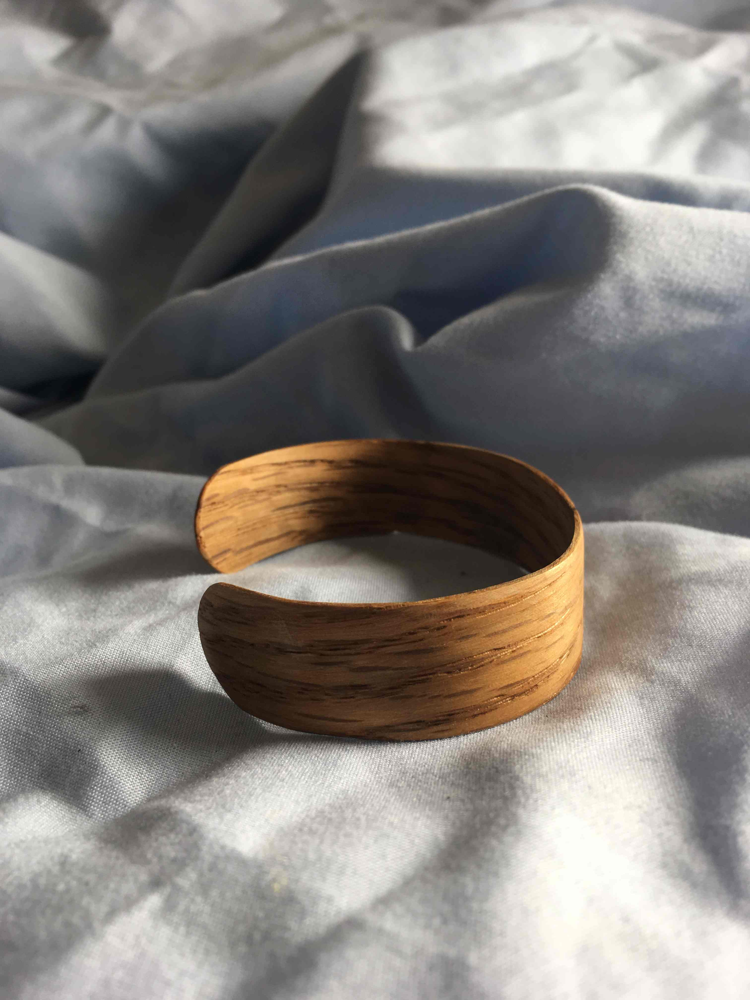

I wanted to make a bracelet out of wood veneers. The original idea was to use two pieces of wood laminated around a bracelet shaped form, and they would hold each other in that shape. The idea was to use two different types of wood for the inside and outside which would produce a nice contrast. I still think that could work and would like to try it again someday, but as it was I couldn’t make thin enough pieces of wood. I ended up steam bending the pieces and tying them around the form. Only one piece ended up surviving this process without cracking, but it turned out pretty nice! I’ve since read a lot more about steam bending and would like to try this method again, hopefully with a higher success rate.
To make the form I glued two pieces of 2x4 together, cut off the corners on the table saw, then shaped it like a bracelet with a hand plane. If I was planning ahead I should have made the form smaller than I wanted to account for springback.
Preparing the strips, the species I had on hand were common pine, fir, oak, maple, and cherry. I thought it would be really cool to use one of the knots in the strips on the left but those snapped pretty much immediately.
The reason most of the pieces cracked, here’s how I was making steam for bending. It’s a colander on top of a pot of boiling water This setup just doesn’t produce much steam and the steam it does produce is wasted because it’s exhausted before really interacting with the wood. In the future I will start by soaking the pieces ahead of time and then building a steam box that does a better job of recirculating the steam before exhausting.
here's the bracelet finished with Danish oil.
  